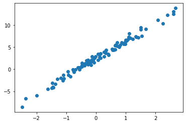
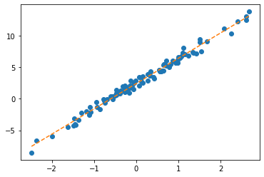
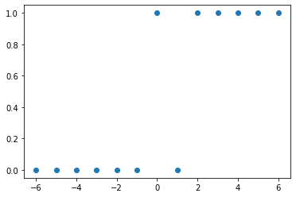
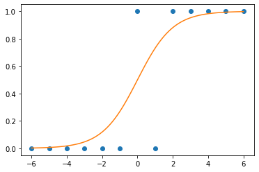
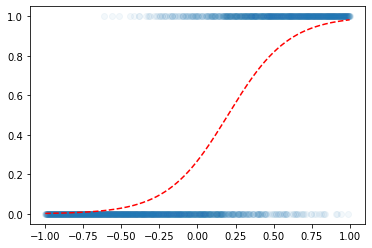

import torch
import pandas as pd
import numpy as np
import matplotlib.pyplot as plt 04wk-2: 딥러닝의 기초 (3)
딥러닝의 기초
회귀분석(3)– step1의 다른버전 (복습+\(\alpha\)) // 로지스틱(1)– step4의 다른버전, 로지스틱 motive
강의영상
https://youtube.com/playlist?list=PLQqh36zP38-zQEazdKzpyl8St3r8F9b8u
Imports
numpy, torch (선택학습)
numpy, torch는 엄청 비슷해요
- torch.tensor() = np.array() 처럼 생각해도 무방
np.array([1,2,3]), torch.tensor([1,2,3])(array([1, 2, 3]), tensor([1, 2, 3]))- 소수점의 정밀도에서 차이가 있음 (torch가 좀 더 쪼잔함)
np.array([3.123456789])array([3.12345679])torch.tensor([3.123456789])tensor([3.1235])- 기본적인 numpy 문법은 np 대신에 torch를 써도 무방 // 완전 같지는 않음
np.arange(10), torch.arange(10)(array([0, 1, 2, 3, 4, 5, 6, 7, 8, 9]), tensor([0, 1, 2, 3, 4, 5, 6, 7, 8, 9]))np.linspace(0,1,10), torch.linspace(0,1,10)(array([0. , 0.11111111, 0.22222222, 0.33333333, 0.44444444,
0.55555556, 0.66666667, 0.77777778, 0.88888889, 1. ]),
tensor([0.0000, 0.1111, 0.2222, 0.3333, 0.4444, 0.5556, 0.6667, 0.7778, 0.8889,
1.0000]))np.random.randn(10)array([-0.36178915, -0.07674959, 0.30418196, 0.92197998, 2.17699807,
-0.67051237, 0.64369007, 1.16643216, 0.49921069, -1.53722202])torch.randn(10)tensor([-0.2795, 0.0139, 0.9181, 1.8570, -0.4213, 0.0173, -1.1933, 0.4933,
0.2827, -0.8889])length \(n\) vector, \(n \times 1\) col-vector, \(1 \times n\) row-vector
- 길이가 3인 벡터 선언방법
a = torch.tensor([1,2,3])
a.shapetorch.Size([3])- 3x1 col-vec 선언방법
(방법1)
a = torch.tensor([[1],[2],[3]])
a.shapetorch.Size([3, 1])(방법2)
a = torch.tensor([1,2,3]).reshape(3,1)
a.shapetorch.Size([3, 1])- 1x3 row-vec 선언방법
(방법1)
a = torch.tensor([[1,2,3]])
a.shapetorch.Size([1, 3])(방법2)
a = torch.tensor([1,2,3]).reshape(1,3)
a.shapetorch.Size([1, 3])- 3x1 col-vec 선언방법, 1x3 row-vec 선언방법에서 [[1],[2],[3]] 혹은 [[1,2,3]] 와 같은 표현이 이해안되면 아래링크로 가셔서
https://guebin.github.io/STBDA2022/2022/03/14/(2주차)-3월14일.html
첫번째 동영상 12:15 - 22:45 에 해당하는 분량을 학습하시길 바랍니다.
torch의 dtype
- 기본적으로 torch는 소수점으로 저장되면 dtype=torch.float32 가 된다. (이걸로 맞추는게 편리함)
tsr = torch.tensor([1.23,2.34])
tsrtensor([1.2300, 2.3400])tsr.dtypetorch.float32- 정수로 선언하더라도 dtype를 torch.float32로 바꾸는게 유리함
(안 좋은 선언예시)
tsr = torch.tensor([1,2])
tsr tensor([1, 2])tsr.dtypetorch.int64(좋은 선언예시1)
tsr = torch.tensor([1,2],dtype=torch.float32)
tsr tensor([1., 2.])tsr.dtypetorch.float32(좋은 선언예시2)
tsr = torch.tensor([1,2.0])
tsr tensor([1., 2.])tsr.dtypetorch.float32(사실 int로 선언해도 나중에 float으로 바꾸면 큰 문제없음)
tsr = torch.tensor([1,2]).float()
tsrtensor([1., 2.])tsr.dtypetorch.float32- 왜 정수만으로 torch.tensor를 만들때에도 torch.float32로 바꾸는게 유리할까? \(\to\) torch.tensor끼리의 연산에서 문제가 될 수 있음
별 문제 없을수도 있지만
torch.tensor([1,2])-torch.tensor([1.0,2.0]) tensor([0., 0.])아래와 같이 에러가 날수도 있다
(에러1)
torch.tensor([[1.0,0.0],[0.0,1.0]]) @ torch.tensor([[1],[2]]) RuntimeError: expected scalar type Float but found Long(에러2)
torch.tensor([[1,0],[0,1]]) @ torch.tensor([[1.0],[2.0]])RuntimeError: expected scalar type Long but found Float(해결1) 둘다 정수로 통일
torch.tensor([[1,0],[0,1]]) @ torch.tensor([[1],[2]])tensor([[1],
[2]])(해결2) 둘다 소수로 통일 <– 더 좋은 방법임
torch.tensor([[1.0,0.0],[0.0,1.0]]) @ torch.tensor([[1.0],[2.0]])tensor([[1.],
[2.]])shape of vector
- 행렬곱셈에 대한 shape 조심
A = torch.tensor([[2.00,0.00],[0.00,3.00]])
b1 = torch.tensor([[-1.0,-5.0]])
b2 = torch.tensor([[-1.0],[-5.0]])
b3 = torch.tensor([-1.0,-5.0])A.shape,b1.shape,b2.shape,b3.shape(torch.Size([2, 2]), torch.Size([1, 2]), torch.Size([2, 1]), torch.Size([2]))- A@b1: 계산불가, b1@A: 계산가능
A@b1RuntimeError: mat1 and mat2 shapes cannot be multiplied (2x2 and 1x2)b1@Atensor([[ -2., -15.]])- A@b2: 계산가능, b2@A: 계산불가
A@b2tensor([[ -2.],
[-15.]])b2@ARuntimeError: mat1 and mat2 shapes cannot be multiplied (2x1 and 2x2)- A@b3: 계산가능, b3@A: 계산가능
(A@b3).shape ## b3를 마치 col-vec 처럼 해석torch.Size([2])(b3@A).shape ## b3를 마지 row-vec 처럼 해석torch.Size([2])- 브로드캐스팅
a = torch.tensor([1,2,3])
a - 1tensor([0, 1, 2])b = torch.tensor([[1],[2],[3]])
b - 1tensor([[0],
[1],
[2]])a - b # a를 row-vec 로 해석tensor([[ 0, 1, 2],
[-1, 0, 1],
[-2, -1, 0]])step1의 다른버전 (복습 + \(\alpha\))
read data
df = pd.read_csv("https://raw.githubusercontent.com/guebin/DL2022/master/posts/II.%20DNN/2022-09-22-regression.csv")
df| x | y | |
|---|---|---|
| 0 | -2.482113 | -8.542024 |
| 1 | -2.362146 | -6.576713 |
| 2 | -1.997295 | -5.949576 |
| 3 | -1.623936 | -4.479364 |
| 4 | -1.479192 | -4.251570 |
| ... | ... | ... |
| 95 | 2.244400 | 10.325987 |
| 96 | 2.393501 | 12.266493 |
| 97 | 2.605604 | 13.098280 |
| 98 | 2.605658 | 12.546793 |
| 99 | 2.663240 | 13.834002 |
100 rows × 2 columns
x=torch.tensor(df.x).float().reshape(100,1)
y=torch.tensor(df.y).float().reshape(100,1)
_1 = torch.ones([100,1])
X = torch.concat([_1,x],axis=1)plt.plot(x,y,'o')
ver1: net = torch.nn.Linear(1,1,bias=True)
- 준비
net = torch.nn.Linear(1,1,bias=True)
net.weight.data = torch.tensor([[10.0]])
net.bias.data = torch.tensor([-5.0])
net.weight,net.bias(Parameter containing:
tensor([[10.]], requires_grad=True),
Parameter containing:
tensor([-5.], requires_grad=True))- step1
yhat = net(x) plt.plot(x,y,'o')
plt.plot(x,net(x).data,'--')
- step2
loss = torch.mean((y-yhat)**2)- step3
(미분전)
net.bias,net.weight(Parameter containing:
tensor([-5.], requires_grad=True),
Parameter containing:
tensor([[10.]], requires_grad=True))net.bias.grad, net.weight.grad(None, None)(미분)
loss.backward()(미분후)
net.bias,net.weight(Parameter containing:
tensor([-5.], requires_grad=True),
Parameter containing:
tensor([[10.]], requires_grad=True))net.bias.grad,net.weight.grad(tensor([-13.4225]), tensor([[11.8893]]))- step4
(업데이트전)
net.bias,net.weight(Parameter containing:
tensor([-5.], requires_grad=True),
Parameter containing:
tensor([[10.]], requires_grad=True))net.bias.grad, net.weight.grad(tensor([-13.4225]), tensor([[11.8893]]))(업데이트)
net.bias.data = net.bias.data - 0.1*net.bias.grad
net.weight.data = net.weight.data - 0.1*net.weight.grad net.bias.grad = None
net.weight.grad = None (업데이트후)
net.bias,net.weight(Parameter containing:
tensor([-3.6577], requires_grad=True),
Parameter containing:
tensor([[8.8111]], requires_grad=True))net.bias.grad, net.weight.grad(None, None)- 반복
for epoc in range(30):
yhat = net(x)
loss = torch.mean((y-yhat)**2)
loss.backward()
net.weight.data = net.weight.data - 0.1*net.weight.grad
net.bias.data = net.bias.data - 0.1*net.bias.grad
net.weight.grad = None
net.bias.grad = Noneplt.plot(x,y,'o')
plt.plot(x,net(x).data,'--')
ver2: net = torch.nn.Linear(2,1,bias=False)
- 준비
net = torch.nn.Linear(2,1,bias=False)
net.weight.data = torch.tensor([[-5.0, 10.0]])- step1
yhat = net(X)- step2
loss = torch.mean((y-yhat)**2)- step3
(미분전)
net.weightParameter containing:
tensor([[-5., 10.]], requires_grad=True)net.weight.grad(미분)
loss.backward()(미분후)
net.weightParameter containing:
tensor([[-5., 10.]], requires_grad=True)net.weight.gradtensor([[-13.4225, 11.8893]])- step4
(업데이트전)
net.weightParameter containing:
tensor([[-5., 10.]], requires_grad=True)net.weight.gradtensor([[-13.4225, 11.8893]])(업데이트)
net.weight.data = net.weight.data - 0.1*net.weight.gradnet.weight.grad = None(업데이트후)
net.weightParameter containing:
tensor([[-3.6577, 8.8111]], requires_grad=True)net.weight.grad- 반복
net = torch.nn.Linear(2,1,bias=False)
net.weight.data = torch.tensor([[-5.0, 10.0]])plt.plot(x,y,'o')
plt.plot(x,net(X).data,'--')
for epoc in range(30):
yhat = net(X)
loss = torch.mean((y-yhat)**2)
loss.backward()
net.weight.data = net.weight.data - 0.1*net.weight.grad
net.weight.grad = Noneplt.plot(x,y,'o')
plt.plot(x,net(X).data,'--')
step4의 다른버전: 옵티마이저!
ver1: net = torch.nn.Linear(1,1,bias=True)
- 준비
net = torch.nn.Linear(1,1)
net.weight.data = torch.tensor([[10.0]])
net.bias.data = torch.tensor([[-5.0]]) optimizr = torch.optim.SGD(net.parameters(),lr=1/10) - step1~3
yhat = net(x) loss = torch.mean((y-yhat)**2) loss.backward() - step4
(update 전)
net.weight.data, net.bias.data ## 값은 업데이트 전(tensor([[10.]]), tensor([[-5.]]))net.weight.grad, net.bias.grad ## 미분값은 청소전 (tensor([[11.8893]]), tensor([[-13.4225]]))(update)
optimizr.step()
optimizr.zero_grad() (update 후)
net.weight.data, net.bias.data ## 값은 업데이트 되었음 (tensor([[8.8111]]), tensor([[-3.6577]]))net.weight.grad, net.bias.grad ## 미분값은 0으로 초기화하였음 (tensor([[0.]]), tensor([[0.]]))- 반복
net = torch.nn.Linear(1,1)
net.weight.data = torch.tensor([[10.0]])
net.bias.data = torch.tensor([-5.0])
optimizr = torch.optim.SGD(net.parameters(),lr=1/10) for epoc in range(30):
yhat = net(x)
loss = torch.mean((y-yhat)**2)
loss.backward()
optimizr.step(); optimizr.zero_grad() plt.plot(x,y,'o')
plt.plot(x,net(x).data,'--')
ver2: net = torch.nn.Linear(2,1,bias=False)
- 바로 반복하겠습니다..
net = torch.nn.Linear(2,1,bias=False)
net.weight.data = torch.tensor([[-5.0, 10.0]])
optimizr = torch.optim.SGD(net.parameters(),lr=1/10) for epoc in range(30):
yhat = net(X)
loss = torch.mean((y-yhat)**2)
loss.backward()
optimizr.step(); optimizr.zero_grad() plt.plot(x,y,'o')
plt.plot(x,net(X).data,'--')
Appendix: net.parameters()의 의미? (선택학습)
- iterator, generator의 개념필요
- 탐구시작: 네트워크 생성
net = torch.nn.Linear(in_features=1,out_features=1)
net.weightParameter containing:
tensor([[0.6258]], requires_grad=True)net.biasParameter containing:
tensor([-0.5233], requires_grad=True)- torch.optim.SGD? 를 확인하면 params에 대한설명에 아래와 같이 되어있음
params (iterable): iterable of parameters to optimize or dicts defining
parameter groups- 설명을 읽어보면 params에 iterable object를 넣으라고 되어있음 (iterable object는 숨겨진 명령어로 __iter__를 가지고 있는 오브젝트를 의미)
set(dir(net.parameters)) & {'__iter__'}set()set(dir(net.parameters())) & {'__iter__'}{'__iter__'}- 무슨의미?
_generator = net.parameters()_generator.__next__()Parameter containing:
tensor([[0.6258]], requires_grad=True)_generator.__next__()Parameter containing:
tensor([-0.5233], requires_grad=True)_generator.__next__()StopIteration: - 이건 이런느낌인데?
_generator2 = iter([net.weight,net.bias])_generator2<list_iterator at 0x7fbea7ffd450>_generator2.__next__()Parameter containing:
tensor([[0.6258]], requires_grad=True)_generator2.__next__()Parameter containing:
tensor([-0.5233], requires_grad=True)_generator2.__next__()StopIteration: - 즉 아래는 같은코드이다.
### 코드1
_generator = net.parameters()
torch.optim.SGD(_generator,lr=1/10)
### 코드2
_generator = iter([net.weight,net.bias])
torch.optim.SGD(_generator,lr=1/10)
### 코드3 (이렇게 써도 코드2가 실행된다고 이해할 수 있음)
_iterator = [net.weight,net.bias]
torch.optim.SGD(_iterator,lr=1/10) 결론: net.parameters()는 net오브젝트에서 학습할 파라메터를 모두 모아 리스트(iterable object)로 만드는 함수라 이해할 수 있다.
- 응용예제1
What = torch.tensor([[-5.0],[10.0]],requires_grad=True)
optimizr = torch.optim.SGD([What],lr=1/10) plt.plot(x,y,'o')
plt.plot(x,(X@What).data,'--')
for epoc in range(30):
yhat = X@What
loss = torch.mean((y-yhat)**2)
loss.backward()
optimizr.step();optimizr.zero_grad() plt.plot(x,y,'o')
plt.plot(x,(X@What).data,'--')
- 응용예제2
b = torch.tensor(-5.0,requires_grad=True)
w = torch.tensor(10.0,requires_grad=True)
optimizr = torch.optim.SGD([b,w],lr=1/10)plt.plot(x,y,'o')
plt.plot(x,(w*x+b).data,'--')
for epoc in range(30):
yhat = b+ w*x
loss = torch.mean((y-yhat)**2)
loss.backward()
optimizr.step(); optimizr.zero_grad()plt.plot(x,y,'o')
plt.plot(x,(w*x+b).data,'--')
Logistic regression
motive
- 현실에서 이런 경우가 많음
- \(x\)가 커질수록 (혹은 작아질수록) 성공확률이 증가함.
- (X,y)는 어떤모양?
_df = pd.DataFrame({'x':range(-6,7),'y':[0,0,0,0,0,0,1,0,1,1,1,1,1]})
_df | x | y | |
|---|---|---|
| 0 | -6 | 0 |
| 1 | -5 | 0 |
| 2 | -4 | 0 |
| 3 | -3 | 0 |
| 4 | -2 | 0 |
| 5 | -1 | 0 |
| 6 | 0 | 1 |
| 7 | 1 | 0 |
| 8 | 2 | 1 |
| 9 | 3 | 1 |
| 10 | 4 | 1 |
| 11 | 5 | 1 |
| 12 | 6 | 1 |
plt.plot(_df.x,_df.y,'o')
- (예비학습) 시그모이드라는 함수가 있음
xx = torch.linspace(-6,6,100)
def f(x):
return torch.exp(x)/(1+torch.exp(x))plt.plot(_df.x,_df.y,'o')
plt.plot(xx,f(xx))
model
- \(x\)가 커질수록 \(y=1\)이 잘나오는 모형은 아래와 같이 설계할 수 있음 <— 외우세요!!!
\(y_i \sim Ber(\pi_i),\quad\) where \(\pi_i = \frac{\exp(w_0+w_1x_i)}{1+\exp(w_0+w_1x_i)}\)
\(\hat{y}_i= \frac{\exp(\hat{w}_0+\hat{w}_1x_i)}{1+\exp(\hat{w}_0+\hat{w}_1x_i)}=\frac{1}{1+\exp(-\hat{w}_0-\hat{w}_1x_i)}\)
\(loss= - \sum_{i=1}^{n} \big(y_i\log(\hat{y}_i)+(1-y_i)\log(1-\hat{y}_i)\big)\) <— 외우세요!!
toy example
- 예제시작
x=torch.linspace(-1,1,2000).reshape(2000,1)
w0= -1
w1= 5
u = w0+x*w1
v = torch.exp(u)/(1+torch.exp(u)) # v=πi, 즉 확률을 의미함
y = torch.bernoulli(v) plt.scatter(x,y,alpha=0.05)
plt.plot(x,v,'--r')
- 우리의 목적: \(x\)가 들어가면 빨간선 \(\hat{y}\)의 값을 만들어주는 mapping을 학습해보자.